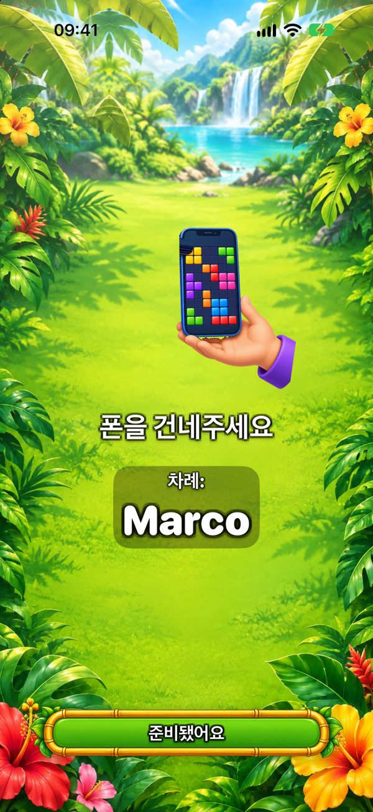
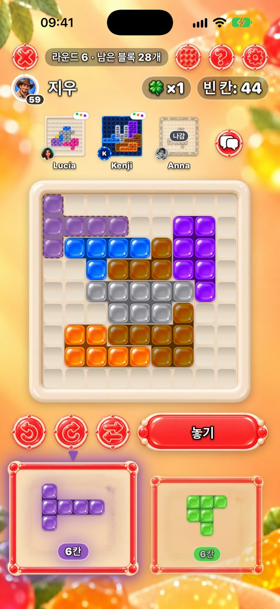
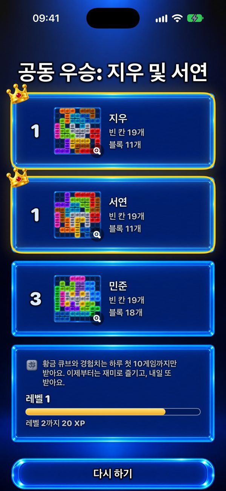

폰 한 대로 함께 하는 게임
폰 한 대로 온 가족이 함께 할 게임을 찾고 있나요? One More Chance는 돌아가며 넘겨 하는 퍼즐입니다. 모두 같은 블록으로 자기 9×9 보드를 채우고, 빈 칸을 가장 적게 남긴 사람이 이깁니다.


폰 한 대로 어떻게 하나요?
모두 무작위로 정해진 시작 블록을 보드 가운데에 놓고 시작합니다. 그다음 매 라운드 블록 두 개가 나옵니다. 첫 번째 사람이 하나를 골라 자기 보드 원하는 곳에 놓고(회전·뒤집기 가능) 폰을 넘깁니다. ‘폰을 건네주세요’ 화면이 다음 차례를 알려 줍니다. 모두 같은 두 블록을 받으니 공정하고, 보드가 자라는 모습만 달라요.

몇 명이 할 수 있나요?
2명은 무료입니다. Premium(한 번 구매, 구독 없음)이 있으면 폰이나 iPad 한 대로 최대 6명까지 할 수 있어요. 인원이 많으면 테이블 위의 iPad가 제격입니다.
각자 자기 폰으로 해도 되나요?
네. 가까이 있는 폰끼리 Bluetooth와 Wi‑Fi로 연결되고(인터넷 필요 없음), 모두 동시에 두며 위쪽에서 다른 사람의 보드를 볼 수 있어요. 3명 이상 할 때 Premium이 필요한 사람은 게임을 만드는 사람뿐입니다.

누가 이기나요?
빈 칸을 가장 적게 남긴 사람이요. 두 블록 모두 들어가지 않으면 ‘한 번 더 기회’로 나만의 추가 블록을 받습니다. 완전히 채운 완벽한 보드가 최고의 목표예요.

한 판은 얼마나 걸리나요?
한 판은 최대 20라운드예요. 혼자 하면 몇 분, 여럿이 하면 각자 얼마나 고민하느냐에 달렸어요. 한 번에 블록 하나씩 두니까요. Premium으로 한 수를 30·60·90초로 제한할 수 있어요.
몇 살부터 할 수 있나요?
App Store 등급은 선택 기능인 친구 채팅과 광고 때문에 13+입니다. 게임 자체는 알록달록한 블록을 보드에 놓는 것이라 폭력적인 내용이 없고, 타이머를 켜지 않으면 서두를 필요도 없으며, 블록을 놓는 데 글을 읽을 필요도 없어요. 어린아이는 어른 옆에서 함께 할 수 있습니다.
무료인가요? 광고가 있나요?
게임은 무료입니다. 광고는 혼자 하는 판 사이에만 나오고, 친구와 하는 게임에서는 폰 한 대든 여러 대든 절대 나오지 않아요. Premium은 광고를 없애고 테마 6개와 최대 6명 플레이를 더해 줍니다.
인터넷이 필요한가요?
아니요. 폰 한 대로도, 가까이 있는 여러 대의 폰으로도 오프라인에서 할 수 있어요. 인터넷은 온라인 테이블, 친구, 오늘의 도전 순위에만 필요합니다.